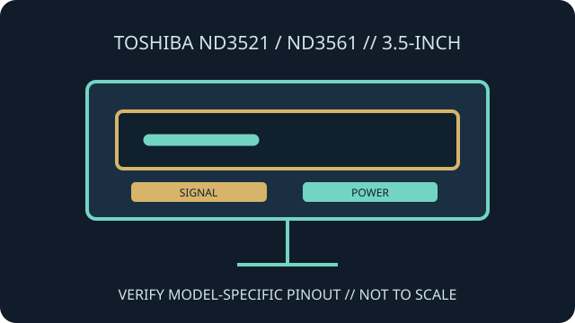

[ INDIVIDUAL COMPONENT // FLOPPY DRIVES ]
Toshiba ND3521 / ND3561 Diskette Drive Family
Toshiba's ND3521 and ND3561 are 3.5-inch diskette-drive models covered by a Toshiba installation-notes document. Their suffix and connector configuration must be confirmed before selecting cabling or host settings.

IDENTIFICATION NOTE: The installation notes cover a family and multiple interface/configuration variants. Read the complete drive label and use the exact pin assignment and jumper information for the unit being installed.
Model specifications
| Catalog subcategory | 3.5-inch floppy mechanisms |
|---|---|
| Exact model / family | Toshiba ND3521 and ND3561 series 3.5-inch diskette drives |
| Form factor | Internal 3.5-inch floppy mechanism; mounting and front-panel arrangement depend on the particular variant. |
| Interface / connectors | Model-specific diskette signal and power connectors. The Toshiba installation notes list multiple configurations; do not assume one universal pinout. |
| Configuration | Jumper, mounting, cable and host setup are variant-dependent as detailed in the Toshiba notes. |
| Host compatibility | Designed for systems with a matching floppy controller and correct model-specific wiring, media and BIOS/software configuration. Physical fit does not establish electrical compatibility. |
Model-specific compatibility checks
- Read the full ND3521/ND3561 number, suffix and label before applying a jumper map or pinout.
- Match signal connector, power connector, drive-select wiring and density behavior to the host manual.
- Check supported media and format separately; the 3.5-inch shell does not identify recording density or filesystem.
Preservation and service notes
Save the original jumper and cabling arrangement before moving any shunts. The installation notes include model-specific handling details; use them alongside the host's service guide.
Keep the drive clean and dry, and document any alignment, belt or electrical service. Test with expendable media before using a preservation master.
Manufacturer documentation & sources
- Toshiba — ND3521/3561 Diskette Drive Installation NotesArchived Toshiba installation document for the ND3521/ND3561 drive family.
- Toshiba ND352 / ND356 Series Diskette Drive Installation Notes (PDF)Direct scan of the installation notes covering setup and configuration details.
When family documentation spans multiple variants, confirm that the connector, jumper table and drive characteristics match the exact label.